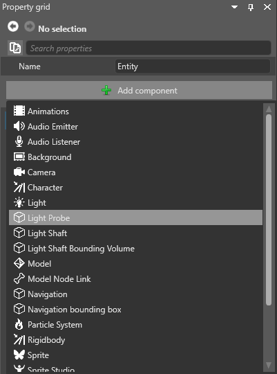

ライト プローブ
ライト プローブは、表面でのライトの反射およびシーン内の他の表面の照射の効果をシミュレートします。
ライト プローブは、ライトが表面の間で反射される領域を作成します。次のスクリーンショットは、ライト プローブによって囲まれたポイント ライトを示します。

ポイント ライトからのライトは、ライト プローブ領域の内部および周囲の表面で反射し、他の表面に映し出されます。たとえば、下のスクリーンショットでは、壁の赤が他のオブジェクトにどのように反映されているかに注目してください。

ライト プローブはカバーする領域内のすべてのオブジェクトに適用され、これには静的オブジェクトも動的オブジェクトも含まれます。ライト プローブが適用されるエンティティについて特別なオプションを有効にする必要はありません。
1. ライト プローブを作成する
シーンまたはエンティティ ツリーを右クリックし、［Light］>［Light Probe］の順に選択します。
または、空のエンティティを作成して、［Property grid］で［Light Probe］コンポーネントを追加します。

ライト プローブがシーンに追加されます。
ライト プローブはシーン エディターに球体として表示されます。ライトの反射が初めてキャプチャされるまで、ライト プローブの表面は完全な黒になっています。

Tip
他のエンティティと同じように、ライト プローブも簡単に複製できます。そのためには、ライト プローブを選択し、Ctrl キーを押しながらマウスで移動します。
2. ライト プローブを配置する
ライト プローブは、3D ボリュームが作成されるように配置する必要があります。ライトはこの領域内で反射されます。つまり、次のようになります。
シーン内には少なくとも 4 つのライト プローブが必要です。これは、次の図のように、4 面体の 4 つの頂点を作成するのに十分な数です。
すべてのライト プローブを 1 つの (つまり 2D) 平面に配置することはできません。たとえば、次のスクリーンショットのプローブは、平面に配置されていてボリュームを作らないので、動作しません。

標準的な戦略は、次のスクリーンショットのように、シーン全体にライト プローブをグリッド状に配置し、一般的な領域をカバーすることです。
3. ライトの反射をキャプチャする
シーン エディターのツールバーで、［New light bounce］ボタンをクリックします。次のようになります。
- 既存のライト反射がクリアされます
- 新しいライト反射が生成されます
Tip
シーン内の光源を変更した場合は、［New light bounce］を再びクリックして古いライティングを削除し、新しいライティングをキャプチャします。
最初のライト反射を作成した後は、［Generate additional light bounce］ボタンをクリックします。これにより、ライトが再び反射され、表面の間を何回も光が反射する効果がシミュレートされて、ライト反射の現実感が増します。
必要なだけ何回でも反射ボタンをクリックできます。パフォーマンスには影響ありません。ただし、これには収穫逓減効果があり、何回か反射すると、変化は知覚できないほど小さくなります。3 回か 4 回反射すれば十分なはずです。
ライト プローブの表示/非表示を切り替える
シーン エディターでライト プローブの表示を変更するには、シーン エディター ツールバーのギズモのオプションの［Light probes］チェックボックスを使用します。
その場合でも、シーン エディターでライト プローブの効果を確認できます。
ライト プローブ グリッドの表示/非表示を切り替える
シーン エディターでライト プローブ グリッドの表示を変更するには、シーン エディター ツールバーのギズモのオプションの［Light probe grid］チェックボックスを使用します。